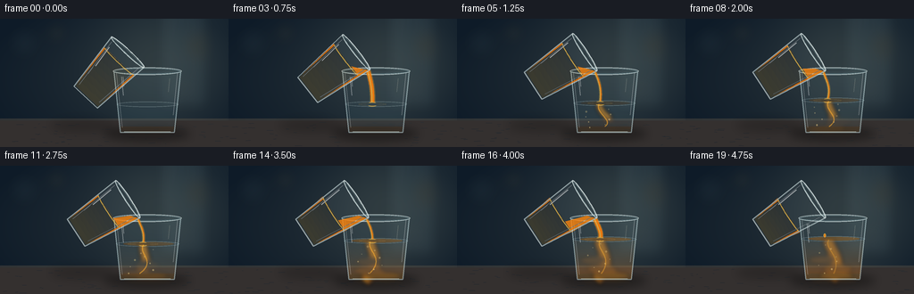
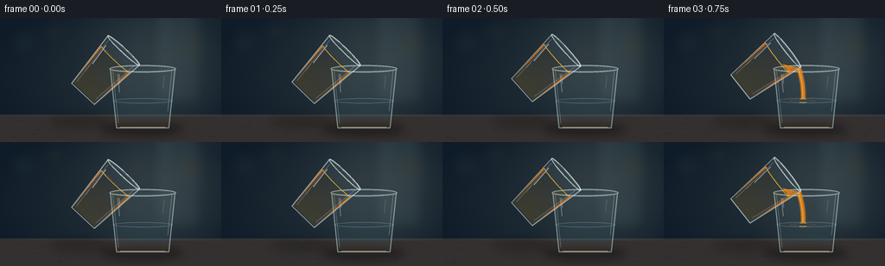

CODING AGENTS AS PIXEL WORLD MODELS
traex/GPT-5.6-Sol · material_0020
点击播放 · 原生 RGB 像素
逐轮保存的候选
回放视频、检查图与代码变化。
每份候选均可单独播放。实际图片检查记录在下方工具轨迹中。
候选 01播放与检查图
点击播放 · 原生 RGB 像素


展开代码变化
--- 上一保存版本
+++ 本次保存版本
@@ -0,0 +1,243 @@
+from pathlib import Path
+import math
+import numpy as np
+from PIL import Image, ImageDraw, ImageFilter
+import artifact_io
+
+# Deterministic vector animation, rendered large and downsampled for clean glass edges.
+W, H, N, S = 256, 144, 20, 4
+RW, RH = W*S, H*S
+rng = np.random.default_rng(20)
+
+def sc(v): return int(round(v*S))
+def pts(seq): return [(sc(x), sc(y)) for x, y in seq]
+def box(b): return tuple(sc(x) for x in b)
+
+def smoothstep(x):
+ x = max(0.0, min(1.0, x))
+ return x*x*(3-2*x)
+
+def layer(): return Image.new('RGBA', (RW, RH), (0,0,0,0))
+def comp(base, over): return Image.alpha_composite(base, over)
+
+def bezier(p0,p1,p2,p3,n=36):
+ out=[]
+ for u in np.linspace(0,1,n):
+ v=1-u
+ out.append((v**3*p0[0]+3*v*v*u*p1[0]+3*v*u*u*p2[0]+u**3*p3[0],
+ v**3*p0[1]+3*v*v*u*p1[1]+3*v*u*u*p2[1]+u**3*p3[1]))
+ return out
+
+def ellipse(draw, xy, fill, outline=None, width=1):
+ draw.ellipse(box(xy), fill=fill, outline=outline, width=max(1,sc(width)))
+
+def line(draw, xy, fill, width=1, joint='curve'):
+ draw.line(pts(xy), fill=fill, width=max(1,sc(width)), joint=joint)
+
+def source_transform(x,y, ang, mouth=(143.0,37.5)):
+ # Pillow-style visual rotation, pivoting about the center of the mouth.
+ a=math.radians(ang); c=math.cos(a); s=math.sin(a)
+ return (mouth[0]+c*x+s*y, mouth[1]-s*x+c*y)
+
+def draw_background(fi):
+ yy,xx=np.mgrid[0:RH,0:RW]
+ # Deep blue-grey kitchen backdrop with a pool of warm side light.
+ y=yy/(RH-1); x=xx/(RW-1)
+ warm=np.exp(-((x-.72)**2/.10+(y-.30)**2/.34))
+ vign=np.clip(((x-.5)**2+(y-.48)**2)*1.35,0,.5)
+ arr=np.empty((RH,RW,4),dtype=np.uint8)
+ arr[...,0]=np.clip(25+25*warm-22*vign,0,255)
+ arr[...,1]=np.clip(37+25*warm-20*vign,0,255)
+ arr[...,2]=np.clip(47+19*warm-14*vign,0,255)
+ arr[...,3]=255
+ im=Image.fromarray(arr,'RGBA')
+ # Out-of-focus window/cabinet shapes.
+ b=layer(); d=ImageDraw.Draw(b)
+ d.rounded_rectangle(box((177,-8,234,101)), radius=sc(5), fill=(105,139,149,25), outline=(186,219,221,18), width=sc(1))
+ d.rectangle(box((188,0,191,105)), fill=(215,235,229,18))
+ d.rectangle(box((217,0,220,105)), fill=(215,235,229,14))
+ d.rectangle(box((177,45,235,48)), fill=(215,235,229,12))
+ for bx,by,br,col in [(27,27,17,(119,150,153,12)),(63,16,11,(231,179,91,15)),(224,31,13,(247,202,113,15)),(205,79,9,(220,239,232,12))]:
+ ellipse(d,(bx-br,by-br,bx+br,by+br),col)
+ b=b.filter(ImageFilter.GaussianBlur(sc(7)))
+ im=comp(im,b)
+ # Countertop and its soft rear edge.
+ t=layer(); d=ImageDraw.Draw(t)
+ d.rectangle(box((0,112,256,144)), fill=(52,48,47,255))
+ d.rectangle(box((0,112,256,114)), fill=(108,93,76,90))
+ # fine stone grain
+ for k in range(55):
+ x0=float(rng.uniform(0,256)); y0=float(rng.uniform(116,143)); ln=float(rng.uniform(1,8))
+ line(d,[(x0,y0),(x0+ln,y0+rng.uniform(-.25,.25))],(134,120,104,int(rng.integers(8,20))),.3)
+ return comp(im,t)
+
+def draw_table_shadows(im, mix):
+ sh=layer(); d=ImageDraw.Draw(sh)
+ ellipse(d,(116,121,213,137),(0,0,0,95))
+ ellipse(d,(56,112,129,128),(0,0,0,45))
+ sh=sh.filter(ImageFilter.GaussianBlur(sc(5)))
+ return comp(im,sh)
+
+def draw_receiving_glass(im, fi, mix, pouring):
+ # Geometry of a subtly tapered water glass.
+ top_y=59.0; bottom_y=128.0
+ level=96.0-14.0*mix
+ left=lambda y: 128+(y-top_y)/(bottom_y-top_y)*7
+ right=lambda y: 203-(y-top_y)/(bottom_y-top_y)*8
+
+ # transparent bowl, barely tinting the background
+ g=layer(); d=ImageDraw.Draw(g)
+ d.polygon(pts([(127,58),(203,58),(195,128),(135,128)]), fill=(154,198,210,17))
+ # water body, with orange progressively diffusing from lower layers
+ bands=34
+ for j in range(bands):
+ y0=level+(126-level)*j/bands; y1=level+(126-level)*(j+1)/bands+0.6
+ depth=(j+.5)/bands
+ orange=mix*(.35+.65*depth)
+ r=int(115*(1-orange)+245*orange); gg=int(176*(1-orange)+137*orange); b=int(196*(1-orange)+34*orange)
+ a=int(23+54*orange)
+ d.polygon(pts([(left(y0),y0),(right(y0),y0),(right(y1),y1),(left(y1),y1)]), fill=(r,gg,b,a))
+ # subdued refraction near base
+ d.polygon(pts([(135,121),(195,121),(194,127),(136,127)]), fill=(242,166,60,int(18+43*mix)))
+ # water surface
+ ellipse(d,(left(level)-1,level-3,right(level)+1,level+3),(132,185,200,25), (197,226,228,80), .7)
+ if mix>.04:
+ # thin amber skin around the impact zone
+ ellipse(d,(left(level)+7,level-2.2,right(level)-5,level+2.0),(242,146,33,int(18+62*mix)),None)
+ im=comp(im,g)
+
+ # Orange plume and curls inside the water, separately blurred to feel volumetric.
+ if mix>0.015:
+ plume=layer(); pd=ImageDraw.Draw(plume)
+ impact_x=160+1.2*math.sin(fi*.8)
+ plen=min(47,8+48*mix)
+ path=bezier((impact_x,level),(158,level+11),(176+4*math.sin(fi*.42),level+22),(158+7*math.sin(fi*.37),level+plen))
+ line(pd,path,(248,132,17,int(45+75*(1-mix*.35))),8+6*mix)
+ line(pd,path,(255,181,48,145),2.2+1.3*pouring)
+ # broad curls in the lower half
+ for k in range(3):
+ cy=min(123, level+23+k*10)
+ phase=fi*.27+k*1.9
+ x0=163+math.sin(phase)*11
+ ellipse(pd,(x0-15-k*2,cy-4,x0+14+k*3,cy+5),(241,124+9*k,20,int((28+14*k)*mix)),None)
+ plume=plume.filter(ImageFilter.GaussianBlur(sc(2.3)))
+ im=comp(im,plume)
+ # sharper tendril on top
+ tend=layer(); td=ImageDraw.Draw(tend)
+ path2=bezier((impact_x,level+1),(154,level+11),(176,level+19),(161+5*math.sin(fi*.4),min(121,level+39)))
+ line(td,path2,(255,174,48,int(75+70*pouring)),1.2)
+ im=comp(im,tend)
+
+ # Bubbles/suspended droplets, deterministic paths.
+ details=layer(); dd=ImageDraw.Draw(details)
+ if mix>.08:
+ for k in range(8):
+ age=(mix*1.55+k*.123)%1
+ bx=158+math.sin(k*3.4+fi*.12)*14
+ by=122-age*(122-level-4)
+ rad=.45+(k%3)*.27
+ ellipse(dd,(bx-rad,by-rad,bx+rad,by+rad),(255,217,128,int(50+80*(1-age))),(255,237,181,90),.35)
+ # glass outlines and speculars
+ line(dd,[(127.5,58),(134.8,127.5),(195.2,127.5),(202.5,58)],(210,235,237,125),1.15)
+ line(dd,[(130.3,61),(136.8,122)],(255,255,255,90),.55)
+ line(dd,[(198.8,61),(194.0,108)],(255,255,255,72),.7)
+ line(dd,[(139,126.8),(191,126.8)],(220,240,238,150),1.0)
+ # bright doubled rim
+ ellipse(dd,(126.5,54.6,203.5,63.0),(206,230,232,10),(232,248,247,165),1.1)
+ ellipse(dd,(128.3,56.1,201.7,61.7),(0,0,0,0),(138,184,194,85),.65)
+ # vertical reflection slashes
+ line(dd,[(136,65),(138,86)],(255,255,255,85),1.0)
+ line(dd,[(137.7,65),(138.6,76)],(255,255,255,135),.42)
+ line(dd,[(190,67),(188.4,82)],(255,244,216,42),.65)
+ return comp(im,details), level
+
+def draw_stream(im, fi, level, pouring):
+ # Lip is the lower endpoint of the rotating mouth.
+ angle=-43-14*smoothstep(fi/5)
+ lip=source_transform(25,1.0,angle)
+ stream=layer(); d=ImageDraw.Draw(stream)
+ if pouring>0.02:
+ sway=1.1*math.sin(fi*.58)
+ end=(160+sway,level-.2)
+ curve=bezier((lip[0]-1,lip[1]+1),(157+sway,67),(163-sway,75),end)
+ width=1.6+3.0*math.sin(math.pi*min(1,pouring))**.35
+ # translucent halo plus saturated core
+ line(d,curve,(255,174,34,70),width+2.2)
+ line(d,curve,(246,125,12,235),width)
+ line(d,[(x-0.65,y) for x,y in curve],(255,209,83,190),max(.65,width*.24))
+ # impact crown and concentric ripples
+ ellipse(d,(end[0]-5.5,level-2.3,end[0]+5.5,level+2.6),(247,145,24,80),(255,207,84,165),.65)
+ for k in range(2):
+ rad=7+k*7+((fi*.8)%1)*4
+ ellipse(d,(end[0]-rad,level-1.1-k*.2,end[0]+rad,level+1.2+k*.2),(0,0,0,0),(244,183,80,int(72-20*k)),.45)
+ elif fi>=17:
+ # A final falling bead communicates the gentle end of the pour.
+ u=min(1,(fi-17)/2)
+ cy=lip[1]+7+u*(level-lip[1]-11)
+ ellipse(d,(lip[0]-1.4,cy-2.0,lip[0]+1.4,cy+2.2),(249,135,15,220),(255,209,93,190),.45)
+ return comp(im,stream), angle
+
+def draw_source_glass(im, fi, angle, mix, pouring):
+ T=lambda p: source_transform(p[0],p[1],angle)
+ out=[T((-25,0)),T((25,0)),T((18,69)),T((-18,69))]
+ src=layer(); d=ImageDraw.Draw(src)
+ # faint transparent glass body
+ d.polygon(pts(out), fill=(190,218,222,14))
+ # juice amount drops; it remains plainly visible through the source glass.
+ amt=1-.54*mix
+ fy=14+(1-amt)*35
+ liq=[T((-23,fy)),T((23,fy)),T((17,67)),T((-17,67))]
+ d.polygon(pts(liq), fill=(238,118,10,205))
+ # gentle depth gradient bands in juice
+ for j in range(8):
+ y0=fy+(67-fy)*j/8; y1=fy+(67-fy)*(j+1)/8+.4
+ poly=[T((-22+(y0/69)*5,y0)),T((22-(y0/69)*5,y0)),T((22-(y1/69)*5,y1)),T((-22+(y1/69)*5,y1))]
+ d.polygon(pts(poly),fill=(255,154+int(j*3),27,int(12+3*j)))
+ # liquid meniscus in source
+ men=[T((x,fy+1.8*math.sqrt(max(0,1-(x/22)**2)))) for x in np.linspace(-22,22,30)]
+ line(d,men,(255,198,72,185),1.0)
+ # liquid reaches the low side of the lip during pouring
+ if pouring>.03:
+ wedge=[T((9,fy)),T((23,fy)),T((25,1)),T((17,8))]
+ d.polygon(pts(wedge),fill=(246,130,13,210))
+
+ # glass contour and base: bright, transparent edges
+ line(d,[out[0],out[3],out[2],out[1]],(224,242,241,145),1.15)
+ line(d,[T((-21,4)),T((-15,64))],(255,255,255,92),.55)
+ line(d,[T((21,5)),T((15,63))],(255,255,255,66),.7)
+ line(d,[T((-18,69)),T((18,69))],(238,249,246,150),1.15)
+ # mouth, drawn last to emphasize a clear drinking glass rather than a carton.
+ rim=[T((25*math.cos(u),2.7*math.sin(u))) for u in np.linspace(0,2*math.pi,60)]
+ line(d,rim,(239,251,249,188),1.15)
+ inner=[T((23*math.cos(u),1.6*math.sin(u)+.4)) for u in np.linspace(0,2*math.pi,60)]
+ line(d,inner,(154,193,197,110),.55)
+ # compact highlights
+ line(d,[T((-19,10)),T((-16,36))],(255,255,255,140),1.0)
+ line(d,[T((-17,39)),T((-16,48))],(255,255,255,75),.5)
+ return comp(im,src)
+
+def render(fi):
+ # pour begins after settling, remains steady, then softly stops
+ if fi<2: pouring=0.0
+ elif fi<5: pouring=smoothstep((fi-2)/3)
+ elif fi<=15: pouring=1.0
+ elif fi<=17: pouring=1-smoothstep((fi-15)/2)
+ else: pouring=0.0
+ mix=smoothstep(max(0,min(1,(fi-2)/16)))
+ im=draw_background(fi)
+ im=draw_table_shadows(im,mix)
+ # The stream is behind the front rim but in front of the liquid.
+ im,level=draw_receiving_glass(im,fi,mix,pouring)
+ im,angle=draw_stream(im,fi,level,pouring)
+ im=draw_source_glass(im,fi,angle,mix,pouring)
+ # Tiny warm bounce light at the glass base.
+ glow=layer(); gd=ImageDraw.Draw(glow)
+ ellipse(gd,(137,125,197,132),(244,145,34,int(8+20*mix)))
+ glow=glow.filter(ImageFilter.GaussianBlur(sc(3)))
+ im=comp(im,glow)
+ im=im.convert('RGB').resize((W,H),Image.Resampling.LANCZOS)
+ return np.asarray(im,dtype=np.uint8)
+
+frames=np.stack([render(i) for i in range(N)],axis=0)
+artifact_io.save(frames,Path(__file__).resolve().parent)
+print('saved',frames.shape,frames.dtype)
可观测工具轨迹
实际执行的命令与返回图片。
命令 1exit 0
/bin/bash -lc "cat prompt.txt && printf '\\n---RULES---\\n' && cat GENERATION_RULES.md && printf '\\n---SPEC---\\n' && cat task_spec.json"
命令 2exit 0
/bin/bash -lc "find . -maxdepth 2 -type f -printf '%p %s bytes\\n' | sort && printf '\\nTools:\\n' && command -v ffmpeg || true && command -v convert || true && command -v blender || true && python3 - <<'PY' mods=['PIL','numpy','cv2','cairo','imageio','moviepy'] for m in mods: try: x=__import__(m); print(m,'OK',getattr(x,'__version__','')) except Exception as e: print(m,'NO',e) PY"
命令 3exit 0
/bin/bash -lc "sed -n '1,260p' artifact_io.py"
命令 4exit 0
/bin/bash -lc "cat > generate.py <<'PY'
from pathlib import Path
import math
import numpy as np
from PIL import Image, ImageDraw, ImageFilter
import artifact_io
# Deterministic vector animation, rendered large and downsampled for clean glass edges.
W, H, N, S = 256, 144, 20, 4
RW, RH = W*S, H*S
rng = np.random.default_rng(20)
def sc(v): return int(round(v*S))
def pts(seq): return [(sc(x), sc(y)) for x, y in seq]
def box(b): return tuple(sc(x) for x in b)
def smoothstep(x):
x = max(0.0, min(1.0, x))
return x*x*(3-2*x)
def layer(): return Image.new('RGBA', (RW, RH), (0,0,0,0))
def comp(base, over): return Image.alpha_composite(base, over)
def bezier(p0,p1,p2,p3,n=36):
out=[]
for u in np.linspace(0,1,n):
v=1-u
out.append((v**3*p0[0]+3*v*v*u*p1[0]+3*v*u*u*p2[0]+u**3*p3[0],
v**3*p0[1]+3*v*v*u*p1[1]+3*v*u*u*p2[1]+u**3*p3[1]))
return out
def ellipse(draw, xy, fill, outline=None, width=1):
draw.ellipse(box(xy), fill=fill, outline=outline, width=max(1,sc(width)))
def line(draw, xy, fill, width=1, joint='curve'):
draw.line(pts(xy), fill=fill, width=max(1,sc(width)), joint=joint)
def source_transform(x,y, ang, mouth=(143.0,37.5)):
# Pillow-style visual rotation, pivoting about the center of the mouth.
a=math.radians(ang); c=math.cos(a); s=math.sin(a)
return (mouth[0]+c*x+s*y, mouth[1]-s*x+c*y)
def draw_background(fi):
yy,xx=np.mgrid[0:RH,0:RW]
# Deep blue-grey kitchen backdrop with a pool of warm side light.
y=yy/(RH-1); x=xx/(RW-1)
warm=np.exp(-((x-.72)**2/.10+(y-.30)**2/.34))
vign=np.clip(((x-.5)**2+(y-.48)**2)*1.35,0,.5)
arr=np.empty((RH,RW,4),dtype=np.uint8)
arr[...,0]=np.clip(25+25*warm-22*vign,0,255)
arr[...,1]=np.clip(37+25*warm-20*vign,0,255)
arr[...,2]=np.clip(47+19*warm-14*vign,0,255)
arr[...,3]=255
im=Image.fromarray(arr,'RGBA')
# Out-of-focus window/cabinet shapes.
b=layer(); d=ImageDraw.Draw(b)
d.rounded_rectangle(box((177,-8,234,101)), radius=sc(5), fill=(105,139,149,25), outline=(186,219,221,18), width=sc(1))
d.rectangle(box((188,0,191,105)), fill=(215,235,229,18))
d.rectangle(box((217,0,220,105)), fill=(215,235,229,14))
d.rectangle(box((177,45,235,48)), fill=(215,235,229,12))
for bx,by,br,col in [(27,27,17,(119,150,153,12)),(63,16,11,(231,179,91,15)),(224,31,13,(247,202,113,15)),(205,79,9,(220,239,232,12))]:
ellipse(d,(bx-br,by-br,bx+br,by+br),col)
b=b.filter(ImageFilter.GaussianBlur(sc(7)))
im=comp(im,b)
# Countertop and its soft rear edge.
t=layer(); d=ImageDraw.Draw(t)
d.rectangle(box((0,112,256,144)), fill=(52,48,47,255))
d.rectangle(box((0,112,256,114)), fill=(108,93,76,90))
# fine stone grain
for k in range(55):
x0=float(rng.uniform(0,256)); y0=float(rng.uniform(116,143)); ln=float(rng.uniform(1,8))
line(d,[(x0,y0),(x0+ln,y0+rng.uniform(-.25,.25))],(134,120,104,int(rng.integers(8,20))),.3)
return comp(im,t)
def draw_table_shadows(im, mix):
sh=layer(); d=ImageDraw.Draw(sh)
ellipse(d,(116,121,213,137),(0,0,0,95))
ellipse(d,(56,112,129,128),(0,0,0,45))
sh=sh.filter(ImageFilter.GaussianBlur(sc(5)))
return comp(im,sh)
def draw_receiving_glass(im, fi, mix, pouring):
# Geometry of a subtly tapered water glass.
top_y=59.0; bottom_y=128.0
level=96.0-14.0*mix
left=lambda y: 128+(y-top_y)/(bottom_y-top_y)*7
right=lambda y: 203-(y-top_y)/(bottom_y-top_y)*8
# transparent bowl, barely tinting the background
g=layer(); d=ImageDraw.Draw(g)
d.polygon(pts([(127,58),(203,58),(195,128),(135,128)]), fill=(154,198,210,17))
# water body, with orange progressively diffusing from lower layers
bands=34
for j in range(bands):
y0=level+(126-level)*j/bands; y1=level+(126-level)*(j+1)/bands+0.6
depth=(j+.5)/bands
orange=mix*(.35+.65*depth)
r=int(115*(1-orange)+245*orange); gg=int(176*(1-orange)+137*orange); b=int(196*(1-orange)+34*orange)
a=int(23+54*orange)
d.polygon(pts([(left(y0),y0),(right(y0),y0),(right(y1),y1),(left(y1),y1)]), fill=(r,gg,b,a))
# subdued refraction near base
d.polygon(pts([(135,121),(195,121),(194,127),(136,127)]), fill=(242,166,60,int(18+43*mix)))
# water surface
ellipse(d,(left(level)-1,level-3,right(level)+1,level+3),(132,185,200,25), (197,226,228,80), .7)
if mix>.04:
# thin amber skin around the impact zone
ellipse(d,(left(level)+7,level-2.2,right(level)-5,level+2.0),(242,146,33,int(18+62*mix)),None)
im=comp(im,g)
# Orange plume and curls inside the water, separately blurred to feel volumetric.
if mix>0.015:
plume=layer(); pd=ImageDraw.Draw(plume)
impact_x=160+1.2*math.sin(fi*.8)
plen=min(47,8+48*mix)
path=bezier((impact_x,level),(158,level+11),(176+4*math.sin(fi*.42),level+22),(158+7*math.sin(fi*.37),level+plen))
line(pd,path,(248,132,17,int(45+75*(1-mix*.35))),8+6*mix)
line(pd,path,(255,181,48,145),2.2+1.3*pouring)
# broad curls in the lower half
for k in range(3):
cy=min(123, level+23+k*10)
phase=fi*.27+k*1.9
x0=163+math.sin(phase)*11
ellipse(pd,(x0-15-k*2,cy-4,x0+14+k*3,cy+5),(241,124+9*k,20,int((28+14*k)*mix)),None)
plume=plume.filter(ImageFilter.GaussianBlur(sc(2.3)))
im=comp(im,plume)
# sharper tendril on top
tend=layer(); td=ImageDraw.Draw(tend)
path2=bezier((impact_x,level+1),(154,level+11),(176,level+19),(161+5*math.sin(fi*.4),min(121,level+39)))
line(td,path2,(255,174,48,int(75+70*pouring)),1.2)
im=comp(im,tend)
# Bubbles/suspended droplets, deterministic paths.
details=layer(); dd=ImageDraw.Draw(details)
if mix>.08:
for k in range(8):
age=(mix*1.55+k*.123)%1
bx=158+math.sin(k*3.4+fi*.12)*14
by=122-age*(122-level-4)
rad=.45+(k%3)*.27
ellipse(dd,(bx-rad,by-rad,bx+rad,by+rad),(255,217,128,int(50+80*(1-age))),(255,237,181,90),.35)
# glass outlines and speculars
line(dd,[(127.5,58),(134.8,127.5),(195.2,127.5),(202.5,58)],(210,235,237,125),1.15)
line(dd,[(130.3,61),(136.8,122)],(255,255,255,90),.55)
line(dd,[(198.8,61),(194.0,108)],(255,255,255,72),.7)
line(dd,[(139,126.8),(191,126.8)],(220,240,238,150),1.0)
# bright doubled rim
ellipse(dd,(126.5,54.6,203.5,63.0),(206,230,232,10),(232,248,247,165),1.1)
ellipse(dd,(128.3,56.1,201.7,61.7),(0,0,0,0),(138,184,194,85),.65)
# vertical reflection slashes
line(dd,[(136,65),(138,86)],(255,255,255,85),1.0)
line(dd,[(137.7,65),(138.6,76)],(255,255,255,135),.42)
line(dd,[(190,67),(188.4,82)],(255,244,216,42),.65)
return comp(im,details), level
def draw_stream(im, fi, level, pouring):
# Lip is the lower endpoint of the rotating mouth.
angle=-43-14*smoothstep(fi/5)
lip=source_transform(25,1.0,angle)
stream=layer(); d=ImageDraw.Draw(stream)
if pouring>0.02:
sway=1.1*math.sin(fi*.58)
end=(160+sway,level-.2)
curve=bezier((lip[0]-1,lip[1]+1),(157+sway,67),(163-sway,75),end)
width=1.6+3.0*math.sin(math.pi*min(1,pouring))**.35
# translucent halo plus saturated core
line(d,curve,(255,174,34,70),width+2.2)
line(d,curve,(246,125,12,235),width)
line(d,[(x-0.65,y) for x,y in curve],(255,209,83,190),max(.65,width*.24))
# impact crown and concentric ripples
ellipse(d,(end[0]-5.5,level-2.3,end[0]+5.5,level+2.6),(247,145,24,80),(255,207,84,165),.65)
for k in range(2):
rad=7+k*7+((fi*.8)%1)*4
ellipse(d,(end[0]-rad,level-1.1-k*.2,end[0]+rad,level+1.2+k*.2),(0,0,0,0),(244,183,80,int(72-20*k)),.45)
elif fi>=17:
# A final falling bead communicates the gentle end of the pour.
u=min(1,(fi-17)/2)
cy=lip[1]+7+u*(level-lip[1]-11)
ellipse(d,(lip[0]-1.4,cy-2.0,lip[0]+1.4,cy+2.2),(249,135,15,220),(255,209,93,190),.45)
return comp(im,stream), angle
def draw_source_glass(im, fi, angle, mix, pouring):
T=lambda p: source_transform(p[0],p[1],angle)
out=[T((-25,0)),T((25,0)),T((18,69)),T((-18,69))]
src=layer(); d=ImageDraw.Draw(src)
# faint transparent glass body
d.polygon(pts(out), fill=(190,218,222,14))
# juice amount drops; it remains plainly visible through the source glass.
amt=1-.54*mix
fy=14+(1-amt)*35
liq=[T((-23,fy)),T((23,fy)),T((17,67)),T((-17,67))]
d.polygon(pts(liq), fill=(238,118,10,205))
# gentle depth gradient bands in juice
for j in range(8):
y0=fy+(67-fy)*j/8; y1=fy+(67-fy)*(j+1)/8+.4
poly=[T((-22+(y0/69)*5,y0)),T((22-(y0/69)*5,y0)),T((22-(y1/69)*5,y1)),T((-22+(y1/69)*5,y1))]
d.polygon(pts(poly),fill=(255,154+int(j*3),27,int(12+3*j)))
# liquid meniscus in source
men=[T((x,fy+1.8*math.sqrt(max(0,1-(x/22)**2)))) for x in np.linspace(-22,22,30)]
line(d,men,(255,198,72,185),1.0)
# liquid reaches the low side of the lip during pouring
if pouring>.03:
wedge=[T((9,fy)),T((23,fy)),T((25,1)),T((17,8))]
d.polygon(pts(wedge),fill=(246,130,13,210))
# glass contour and base: bright, transparent edges
line(d,[out[0],out[3],out[2],out[1]],(224,242,241,145),1.15)
line(d,[T((-21,4)),T((-15,64))],(255,255,255,92),.55)
line(d,[T((21,5)),T((15,63))],(255,255,255,66),.7)
line(d,[T((-18,69)),T((18,69))],(238,249,246,150),1.15)
# mouth, drawn last to emphasize a clear drinking glass rather than a carton.
rim=[T((25*math.cos(u),2.7*math.sin(u))) for u in np.linspace(0,2*math.pi,60)]
line(d,rim,(239,251,249,188),1.15)
inner=[T((23*math.cos(u),1.6*math.sin(u)+.4)) for u in np.linspace(0,2*math.pi,60)]
line(d,inner,(154,193,197,110),.55)
# compact highlights
line(d,[T((-19,10)),T((-16,36))],(255,255,255,140),1.0)
line(d,[T((-17,39)),T((-16,48))],(255,255,255,75),.5)
return comp(im,src)
def render(fi):
# pour begins after settling, remains steady, then softly stops
if fi<2: pouring=0.0
elif fi<5: pouring=smoothstep((fi-2)/3)
elif fi<=15: pouring=1.0
elif fi<=17: pouring=1-smoothstep((fi-15)/2)
else: pouring=0.0
mix=smoothstep(max(0,min(1,(fi-2)/16)))
im=draw_background(fi)
im=draw_table_shadows(im,mix)
# The stream is behind the front rim but in front of the liquid.
im,level=draw_receiving_glass(im,fi,mix,pouring)
im,angle=draw_stream(im,fi,level,pouring)
im=draw_source_glass(im,fi,angle,mix,pouring)
# Tiny warm bounce light at the glass base.
glow=layer(); gd=ImageDraw.Draw(glow)
ellipse(gd,(137,125,197,132),(244,145,34,int(8+20*mix)))
glow=glow.filter(ImageFilter.GaussianBlur(sc(3)))
im=comp(im,glow)
im=im.convert('RGB').resize((W,H),Image.Resampling.LANCZOS)
return np.asarray(im,dtype=np.uint8)
frames=np.stack([render(i) for i in range(N)],axis=0)
artifact_io.save(frames,Path(__file__).resolve().parent)
print('saved',frames.shape,frames.dtype)
PY
python3 generate.py
ls -lh pixels.npz inspection.png index.html frames/00.png frames/19.png"命令 5exit 0
/bin/bash -lc "python3 - <<'PY'
from pathlib import Path
import numpy as np
from PIL import Image
z=np.load('pixels.npz')['pixels']
print('packed tensor:',z.shape,z.dtype,'frames differ:',[int(np.count_nonzero(z[:,:,i]"'!=z[:,:,i-1])) for i in range(1,20)])
imgs=[np.asarray(Image.open(f'"'frames/{i:02d}.png')) for i in range(20)]
print('frame shapes:',{a.shape for a in imgs},'modes:',{Image.open(f'frames/{i:02d}.png').mode for i in range(20)})
print('artifact files:', all(Path(p).exists() for p in ['pixels.npz','inspection.png','transition_check.png','index.html']))
PY"保存候选 1 份；完成命令 5 次；可验证图片返回 0 张。原始 API 响应与完整日志保留在本地。